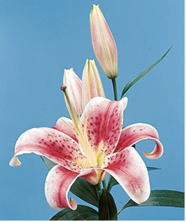

1. Consider the role of rhetoric, technology, and ethics in acts of making.
These projects really pushed my ability in creating things using different mediums. Before this course I was very unfamilar with InDesign, visual studio code, and Adobe Illustrator. These projects were difficult to create because I was so unfamilar with the applications that was used to create them.
2. Leverage Design Principles.
There were a lot of design principles that I had not considered before these projects, such as, font spacing, proximity and hierarchy. The Logo A/B/C project really opened my eyes to the importance of how graphics can convey different messages to different people, and the importance of testing designs. Overall, these projects allowed me to gain experience in the mediums that are to be used for the other projects and helped mt understanding of how all design principles work together in different ways.
3. Engage with others in a workshop environment.
It was interesting to give feedback on designs that I know people worked hard on. It was nice to hear constructive criticsm from people that I did not know, and refereshing to hear when someone did not like something or getting a suggestion that made the project much better. I also appericated that most of the people I spoke to were honest about the struggles that they faced when creating some of the projects, especially on the cartoon yourself project, it made me feel less frustrated with the tedious nature of the project.
4. Practice revision within and across media forms.
In the revision process, I learned sometimes it's better and/or easier to start from scratch with certain designs. For the good design project, I redid my entier project at least 3 times inorder to create something that was an example of a good design. In working with InDesign with that project, I learned that it is easier to re do something than trying to move things around while you are working.
5. Learn to present your work.
I consider myself to be a good presenter, especailly in settings where I do not know people in the room. I am confident in my work and am more than capable in talking about what I have done. What was a pleasant surprise was getting confortable with hearing feedback while standing infront of a group. Additionally, I had never interviewed someone on my designs before so hearing feedback as a reslut of gathering data was refreshing and allowed me to see the design from a different perpective.

generated by Pitt Fuego
“Why make a spark when you can light a fire?


.jpg)